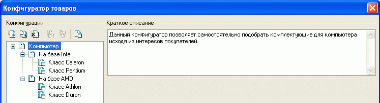
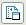
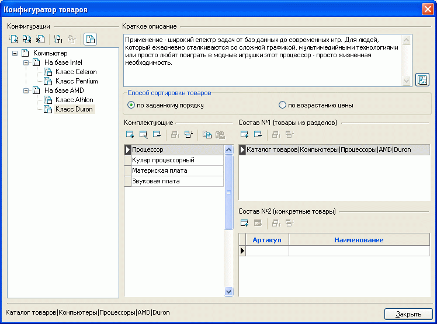
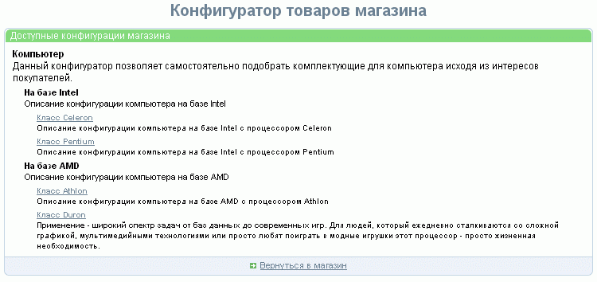
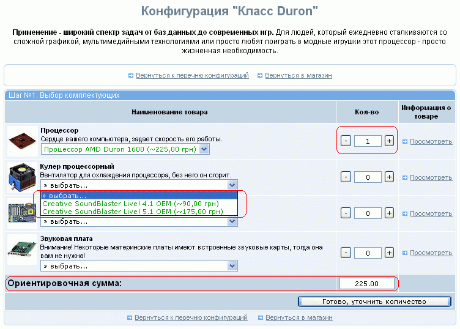
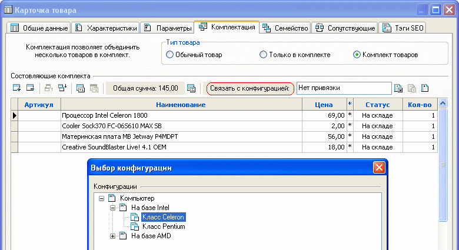
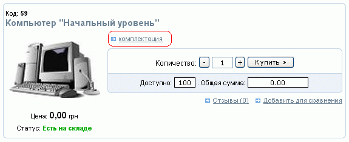
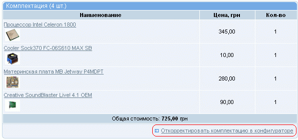
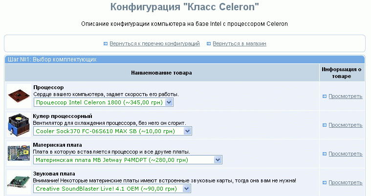
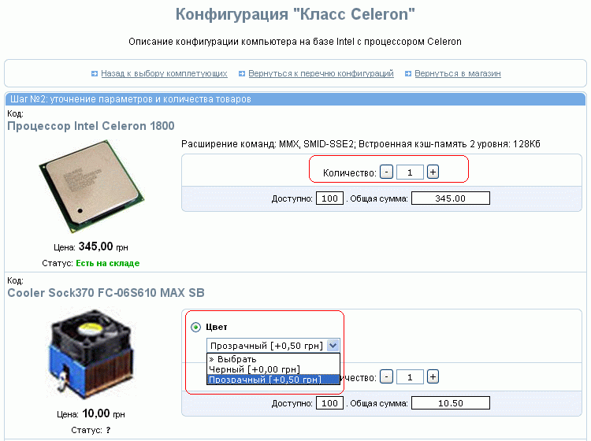

Конфигуратор служит для предоставления покупателю возможности подобрать состав приобретаемого изделия, состоящего из типовых товаров. Вызов окна конфигуратора товаров осуществляется из главного меню программы "Товары - Конфигуратор товаров".
В окне конфигуратора можно сформировать дерево конфигураций, состоящее из разделов (подразделов) и входящих в них конфигураций. Разделы и конфигурации можно добавлять, удалять, переименовывать, группировать, сортировать. Помимо этого, им можно давать краткое описание.

Для обозначения того, чем - разделом или конфигурацией - является вновь созданный объект, служит кнопка

, расположенная над деревом конфигураций. Раздел не имеет своих значений, а только группирует схожие подразделы или конфигурации. Конфигурация же имеет набор значений и настроек, для задания которых в правой части окна конфигуратора товаров появляется форма:

Её заполнение сводится к заполнению краткого описания конфигурации
и заданию наименований комплектующих, входящих в конфигурируемое
изделие, а для каждого комплектующего - указания состава в
виде совокупности товаров из раздела (можно нескольких разделов)
или конкретных товаров. Естественно, что в случае задания состава
в виде раздела, в указанном разделе должны быть только взаимозаменяемые
однотипные товары, совместимые с оборудованием данной конфигурации.
Помимо того, задается способ сортировки товаров при отображении покупателю для
выбора: «по заданному порядку» или «по возрастанию цены».
Перечни комплектующих (не состав!) могут быть скопированы в другие конфигурации. (Например, перечень комплектующих для компьютеров - процессор, кулер процессорный, материнская плата, звуковая карта и т.д. одинаков для всех компьютеров, различается только его состав. Поэтому можно скопировать весь или часть перечня, заданного для "Класс Celeron" в "Класс Pentium" и т.д) . Для этого выделяются требуемые комплектующие и при нажатой клавише "Ctrt" "перетягиваются" мышью на другую конфигурацию.
Для того, чтобы покупатель мог воспользоваться конфигуратором, необходимо создать раздел, указав в его свойствах "Тип раздела" - "Ссылка на страницу" и далее в поле "Раздел ссылается на стандартную страницу" - "Конфигуратор товаров". Также могут быть указаны места отображения ссылки на раздел, его описание и ряд других параметров.
Покупателю при выборе ссылки на конфигуратор будет предложен список всех конфигураций:

После выбора желаемой конфигурации будет предложено самостоятельно определить ее состав. Для этого выбираются составляющие и их количество (по умолчанию количество для заданного комплектующего устанавливается в "1"). В нижней части окна отображается ориентировочная сумма. Конечная сумма может отличаться от этой на величину скидки на каждое из комплектующих или на величину надбавки, в случае наличия у товара параметров, изменяющих его цену:

Если в магазине введен товар, являющийся комплектом, возможна его привязка к конфигурации (опция "Связать с конфигурацией" закладки "Комплектация" карточки товара):

тогда в соответствующем разделе покупателю будет предлагаться типовой комплект:

для которого при желании можно не только посмотреть состав и ориентировочную сумму:

но и откорректировать его, изменив составляющие:

Следует иметь в виду, что комплектование изделия в рамках использования конфигуратора происходит в два этапа: на первом шаге предлагается выбрать сами комплектующие изделия, при необходимости можно просмотреть информацию о каждом из них (Ссылка "Просмотреть").
Далее, нажанием кнопки "Готово, уточнить количество", осуществляется переход ко второму шагу, на котором предоставляется возможность указания количества каждого комплектующего (причем, если на закладке "Основные" общих настроек магазина указано "Пpoдaвaть тoвapы c учeтoм иx кoличecтвa нa cклaдe", то количество можно будет указывать в соответствии с шагом заказа), а при наличии параметров - возможность их выбора:

В нижней части области уточнения параметров и количества товаров отображается
общая сумма за комплект с учетом выбранных составляющих и их количества.